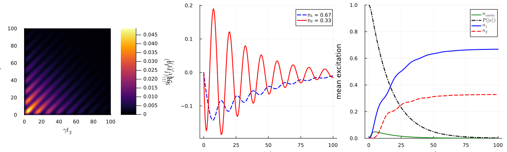

Photon Number and Mode Entanglement with a Quantum Emitter
We simulate the decay of a three-level Λ emitter through a cavity into two dominant temporal output modes. We identify these modes from the field autocorrelation function, capture them with two virtual output cavities, and visualize the resulting mode populations and the final atom-mode density matrix. This example, reproduces Fig. 4 of A. Kiilerich and K. Molmer, Phys. Rev. A 102, 023717 (2020).
using QuantumInputOutput
using SecondQuantizedAlgebra
using QuantumOptics
using QuantumOpticsBase: dagger
using Plots
using LaTeXStrings
using LinearAlgebra
using DataInterpolations# symbolic Hilbert space
hc = FockSpace(:c)
hs = NLevelSpace(:atom, 3)
hv1 = FockSpace(:v1)
hv2 = FockSpace(:v2)
h = hc ⊗ hs ⊗ hv1 ⊗ hv2
# symbolic operators
a = Destroy(h, :a, 1)
σ(i, j) = Transition(h, :σ, i, j, 2)
av1 = Destroy(h, :a_v1, 3)
av2 = Destroy(h, :a_v2, 4)
# symbolic parameters
@variables γ::Real g::Real ω12::Real g_v1::Number g_v2::NumberThe localized system consists of a cavity mode coupled to a three-level Λ emitter. The transition |g₁⟩ ↔ |e⟩ is resonant with the cavity and |g₂⟩ ↔ |e⟩ is detuned by ω₁₂.
H_s = g * (a' * σ(1, 3) + a * σ(3, 1) + a' * σ(2, 3) + a * σ(3, 2)) + ω12 * σ(2, 2)
G_s = SLH(1, √(γ) * a, H_s)
G_v1 = SLH(1, g_v1' * av1, 0)
G_v2 = SLH(1, g_v2' * av2, 0)
G = cascade(G_s, G_v1, G_v2)
H = hamiltonian(G)
J = jump_operator(G)[1]We use the parameters quoted in the paper and initialize the emitter in the excited state.
γ_ = 1.0
g_ = 0.1γ_
ω12_ = 0.5γ_
T = [0:0.005:1;]*100/γ_
ΔT = T[2] - T[1]
dict_p_1 = Dict([γ, g, ω12, g_v1, g_v2] .=> [γ_, g_, ω12_, 0.0, 0.0])
# numeric bases and operators
bc = FockBasis(1)
bs = NLevelBasis(3)
bv1 = FockBasis(1)
bv2 = FockBasis(1)
b = bc ⊗ bs ⊗ bv1 ⊗ bv2
a_qo = destroy(bc) ⊗ one(bs) ⊗ one(bv1) ⊗ one(bv2)
σ_qo(i, j) = one(bc) ⊗ transition(bs, i, j) ⊗ one(bv1) ⊗ one(bv2)
av1_qo = one(bc) ⊗ one(bs) ⊗ destroy(bv1) ⊗ one(bv2)
av2_qo = one(bc) ⊗ one(bs) ⊗ one(bv1) ⊗ destroy(bv2)We first solve the decay dynamics without explicit output cavities and determine the two dominant temporal output modes from the first-order correlation matrix g⁽¹⁾(t₁, t₂).
H_QO_1 = to_numeric(H, b; parameter = dict_p_1)
J_QO_1 = to_numeric(J, b; parameter = dict_p_1)
function input_output_1(t, ρ)
J = [J_QO_1]
return H_QO_1, J, dagger.(J)
end
ψ0 = fockstate(bc, 0) ⊗ nlevelstate(bs, 3) ⊗ fockstate(bv1, 0) ⊗ fockstate(bv2, 0)
t_1, ρt_1 = timeevolution.master_dynamic(T, ψ0, input_output_1)
Js = √(γ_) * a_qo
g1_m = correlation_matrix(T, ρt_1, input_output_1, Js)
F = eigen(g1_m)
n_avg = real.(F.values) * ΔT
v1_mode = F.vectors[:, end] / √(ΔT)
v2_mode = F.vectors[:, end-1] / √(ΔT)
n1 = n_avg[end]
n2 = n_avg[end-1]After identifying the two modes, we add two cascaded virtual output cavities. The coupling of the second cavity must be corrected for the reshaping caused by the first output cavity, which is done with effective_output_mode.
gv1_t = coupling_output(v1_mode, T)
v2_eff = effective_output_mode([v1_mode, v2_mode], T, 2)
gv2_t = coupling_output(v2_eff, T)
dict_p_2 = Dict([γ, g, ω12] .=> [γ_, g_, ω12_])
dict_p_t_2 = Dict(g_v1 => gv1_t, g_v2 => gv2_t)
H_QO_2 = to_numeric(H, b; parameter = dict_p_2, time_parameter = dict_p_t_2)
J_QO_2 = to_numeric(J, b; parameter = dict_p_2, time_parameter = dict_p_t_2)
function input_output_2(t, ρ)
J = [J_QO_2(t)]
return H_QO_2(t), J, dagger.(J)
end
t_2, ρt_2 = timeevolution.master_dynamic(T, ψ0, input_output_2)We monitor the excited-state population, the cavity population, and the populations transferred to the two output modes.
P_e_t = real.(expect(σ_qo(3, 3), ρt_2))
n_cavity_t = real.(expect(a_qo' * a_qo, ρt_2))
n1_t = real.(expect(av1_qo' * av1_qo, ρt_2))
n2_t = real.(expect(av2_qo' * av2_qo, ρt_2))p_a = heatmap(
T,
T,
real.(g1_m);
c = :inferno,
xlabel = L"\gamma t_2",
ylabel = L"\gamma t_1",
colorbar_title = L"g^{(1)}(t_1,t_2)",
xlims = (0, 100),
ylims = (0, 100),
aspect_ratio = 1,
)
p_b = plot(
T,
real.(v1_mode);
color = :blue,
ls = :dash,
lw = 2,
label = "n₁ = $(round(n1; digits = 2))",
)
plot!(p_b, T, real.(v2_mode); color = :red, lw = 2, label = "n₂ = $(round(n2; digits = 2))")
plot!(p_b; xlabel = L"\gamma t", ylabel = L"\Re[v_i(t)]", legend = :topright)
p_c = plot(T, n_cavity_t; color = :green, ls = :dot, lw = 2, label = L"n_\mathrm{cavity}")
plot!(p_c, T, P_e_t; color = :black, ls = :dashdot, lw = 2, label = L"P(|e\rangle)")
plot!(p_c, T, n1_t; color = :blue, lw = 2, label = L"n_1")
plot!(p_c, T, n2_t; color = :red, ls = :dash, lw = 2, label = L"n_2")
plot!(
p_c;
xlabel = L"\gamma t",
ylabel = "mean excitation",
ylims = (0, 1),
legend = :topright,
)
plot(p_a, p_b, p_c, layout = (1, 3), size = (1200, 360))
Note that the plotted real part of the output-mode functions are not the same as in the paper due the arbitrary global phase.
Package versions
These results were obtained using the following versions:
using InteractiveUtils
versioninfo()
using Pkg
Pkg.status(
[
"QuantumInputOutput",
"SecondQuantizedAlgebra",
"QuantumOptics",
"Plots",
"DataInterpolations",
"LaTeXStrings",
],
mode = PKGMODE_MANIFEST,
)Julia Version 1.12.7
Commit 6d172b025e4 (2026-08-15 08:05 UTC)
Build Info:
Official https://julialang.org release
Platform Info:
OS: Linux (x86_64-linux-gnu)
CPU: 4 × AMD EPYC 7763 64-Core Processor
WORD_SIZE: 64
LLVM: libLLVM-18.1.7 (ORCJIT, znver3)
GC: Built with stock GC
Threads: 4 default, 1 interactive, 4 GC (on 4 virtual cores)
Environment:
JULIA_PKG_SERVER_REGISTRY_PREFERENCE = eager
JULIA_DEBUG = Documenter
JULIA_NUM_THREADS = auto
Status `~/work/QuantumInputOutput.jl/QuantumInputOutput.jl/docs/Manifest.toml`
[82cc6244] DataInterpolations v9.4.0
[b964fa9f] LaTeXStrings v1.4.1
[91a5bcdd] Plots v1.41.7
[18f9eda6] QuantumInputOutput v0.5.1 `~/work/QuantumInputOutput.jl/QuantumInputOutput.jl`
[6e0679c1] QuantumOptics v1.2.8
[f7aa4685] SecondQuantizedAlgebra v0.10.0This page was generated using Literate.jl.